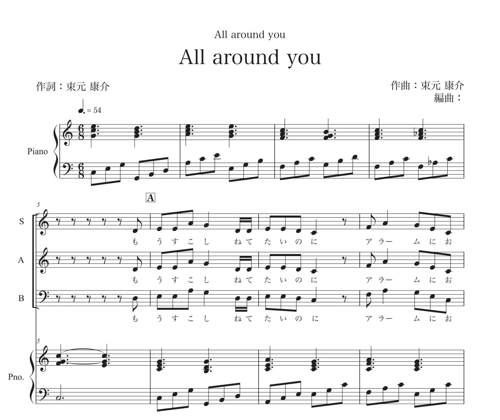
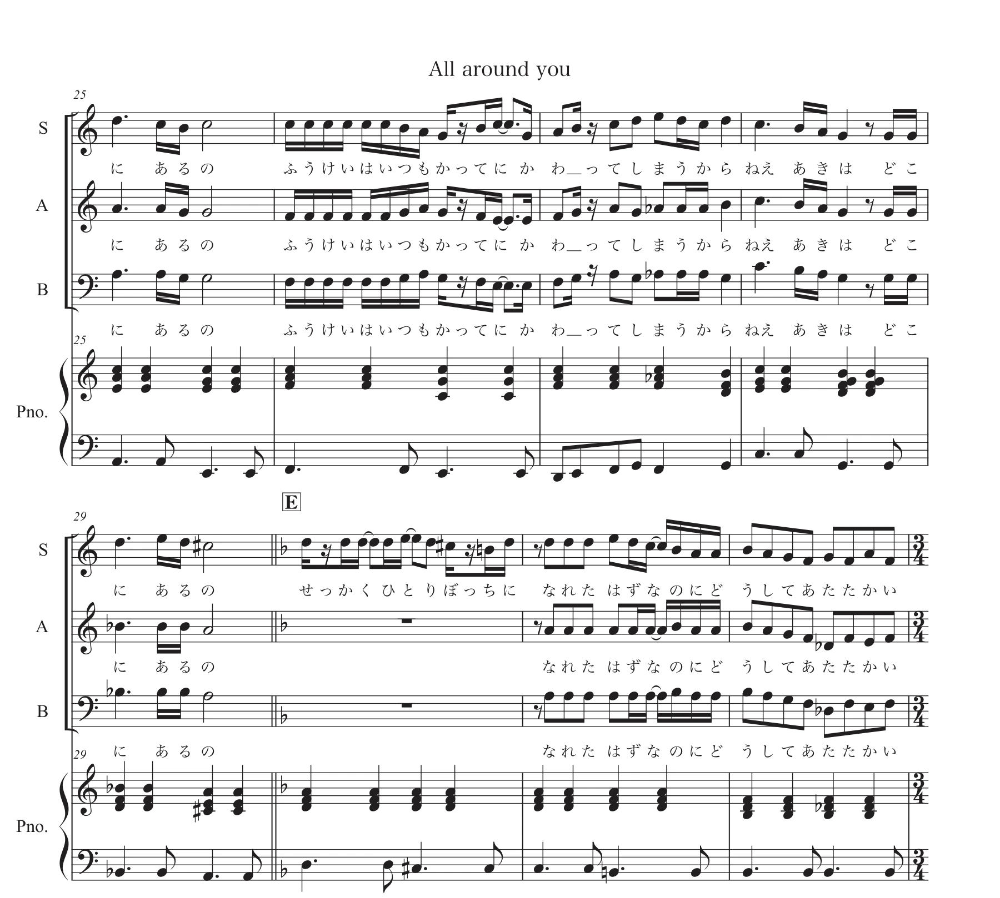

CHORAL WORK / 2026
All around you
夏の終わりから秋へ。変わっていく風景と、その中に残る人のあたたかさを描く合唱作品。
01 / LISTEN
制作音源を聴く
02 / ABOUT
作品について
夏の終わりから秋へ移る風景の中で、学校生活へ戻っていく感覚や、孤独と周囲のあたたかさを描いた合唱作品です。
WORDS / MUSIC作詞・作曲：束元康介
YEAR2026
PERFORMANCE令和8年度 足立区連合音楽会にて演奏予定
03 / SCORE PREVIEW
楽譜を少し見る
譜例をタップすると拡大してご覧いただけます。


総譜の抜粋のみを掲載しています。総譜全ページのダウンロードは公開していません。
04 / LYRICS
歌詞を読む
詩集《音楽の風景》の該当作品へ →もう少し
寝ていたいのに
アラームに起こされて
終わって欲しく無いことばかりが
終わることばかり
あれもこれも
するつもりだったし
宿題だって
7月のうちに
駆け抜けるはずだった夏は
立ち止まったまま
終わっていた
ねえ、秋は
どこにあるの？
風景はいつも
勝手に変わってしまうから
ねえ、秋は
どこにあるの？
せっかくひとりぼっちに
なれたはずなのに、
どうしてあたたかい
時間割通りの平日に
苦しいような
救われるような
先生も少し眠そうで
生きているんだと思った
早く帰りたかったのに
遠回り
何か無くした
きもちになるのは
夕焼けのせいと
決めつけて
ねえ、秋は
どこにあるの？
風景はいつも
勝手に変わってしまうから
ねえ 秋は
どこにあるの
どうか見つかるように
どうか見つからないように
秋は 何も 答えず
ただ
All around you
05 / VOICE BOX
作品への感想を届ける
音源を聴いて、楽譜や歌詞を読んで感じたことをお聞かせください。
VOICE BOXへ →CONTINUE LISTENING